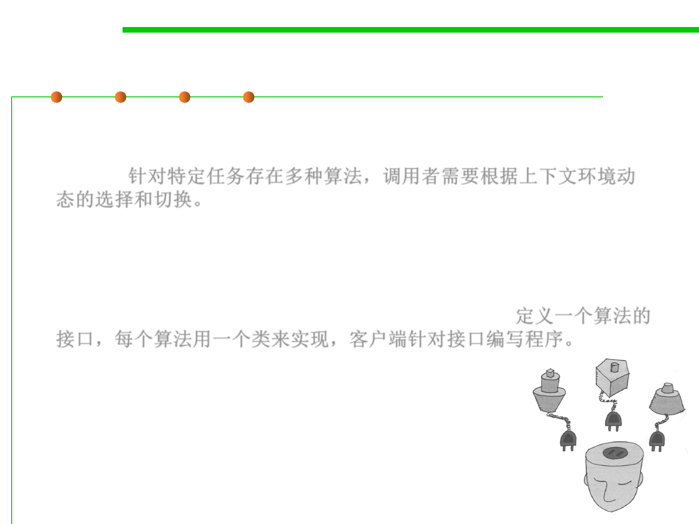

Strategy Pattern
5.3 Design Patterns for Reuse
▪ Problem: Different algorithms exists for a specific task, but client can
switch between the algorithms at run time in terms of dynamic
context. 针对特定任务存在多种算法，调用者需要根据上下文环境动
态的选择和切换。
▪ Example: Sorting a list of customers (Bubble sort, mergesort,
quicksort)
▪ Solution: Create an interface for the algorithm, with an
implementing class for each variant of the algorithm. 定义一个算法的
接口，每个算法用一个类来实现，客户端针对接口编写程序。
▪ Advantage:
– Easily extensible for new algorithm implementations
– Separates algorithm from client context
▪ 整体地替换算法